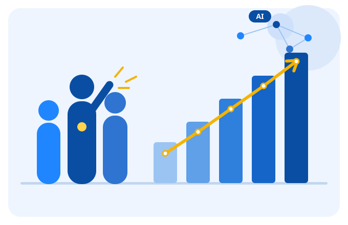
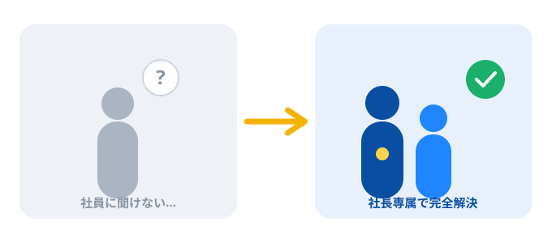
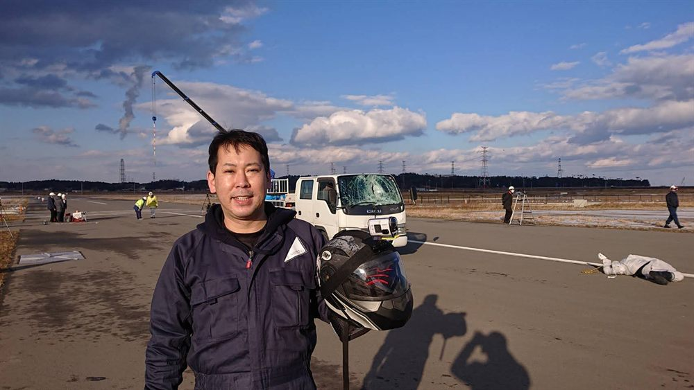
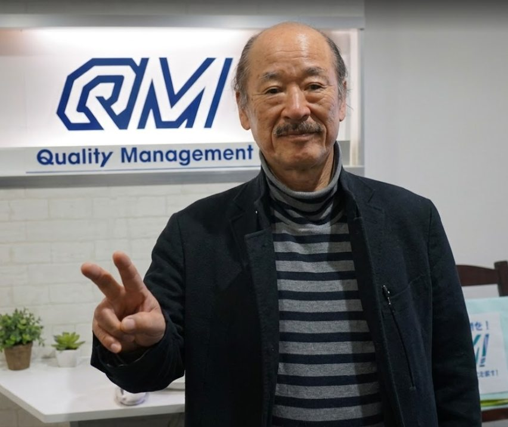
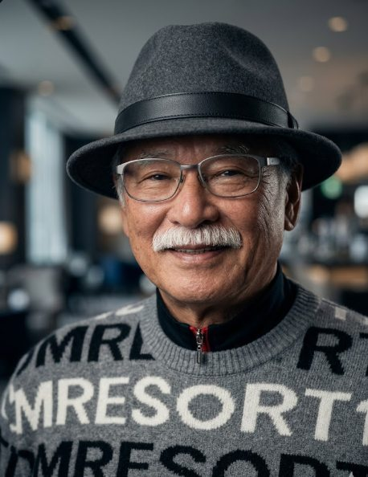

「いまさらAIって何…？」とは、社員には聞きづらい。——大丈夫です。社長専属で、最初の一歩から伴走します。創業者・矢部廣重の「社長のためのセールス革命」を継承し、矢部大がいま、AIで会社をまるごとリボーンさせます。
＼ スローガンは「ご一緒しましょう！」／


でも、こんな本音、ありませんか？
「AIって何？」なんて、立場上きけない。詳しい部下の前では、つい分かったフリをしてしまう。
ツールが多すぎて、自社のどこに効くのか判断できない。情報だけが増えて、動けない。
高い投資をして、結局使われずに終わる——その不安が、最初の一歩を止めている。

私たちは、あなた専属のパートナーです。どんなに初歩的な質問でも、何度でも。「分かったフリ」は、もう要りません。一緒に、最初の一歩から踏み出しましょう。
私たちは、自ら8社を経営し、年商15億・ギネス記録・NY出店・V字回復まで現場で実証してきた当事者です。机上の理論ではなく、「一緒に現場に入る」経営コンサルティング。
主力は「社長のためのAI革命」。そのうえで、クオリティマネジメントが培ってきた現場力を活かし、イベント・舞台関係などの付帯業務もご相談いただけます。
AI導入、営業戦略、時間創造のコンサルティングに加え、イベントや舞台・講演会など「人が動く現場」の企画・運営・制作相談にも対応します。単発の相談から、企画づくり、当日の進行、スタッフ・出演者まわりの調整まで、内容に合わせて現実的な形をご提案します。
矢部大の強みは、机上の提案ではなく、経営・営業・現場づくりを自分でやってきたこと。だから中小企業の社長と同じ目線で、実行まで伴走できます。



「AIコンサル」「大手ファーム」と、当社の決定的な違い。
| 一般的な AIコンサル | 大手 ファーム | クオリティ マネジメント | |
|---|---|---|---|
| 経営の当事者経験 | × | △ | ◎ 自ら8社経営 |
| 現場への伴走 | × | × | ◎ 一緒に現場へ |
| AI × 営業の両立 | △ | × | ◎ 掛け合わせ |
| 売上を上げる実績 | × | △ | ◎ 1.8〜2.4倍 |
| 中小企業への最適化 | △ | × | ◎ 特化 |
現場の社長が体感した、リアルな変化。
「矢部さんは口だけじゃなく、一緒に営業現場に入ってくれた。現場で体感しました。」
「経営者経験者ならではの『現場感』が、営業チームを根本から変えてくれた。」
「失敗も成功も知っている人の言葉は重さが違う。本物の名参謀です。」
「意思決定の速度が体感で3倍になっています。」
株式会社クオリティマネジメント／経営コンサルタント 矢部 大（やべ まさる）
スタントマンから始まり、8社の経営、ギネス世界記録、ニューヨーク出店、コロナ禍でのV字回復——「やると決めたらとことん極める」現場で、私は売上のつくり方を体で覚えてきました。
創業者・矢部廣重の「感動セールス」を受け継ぎ、いまそれをAIと掛け合わせています。大切なのは「誰が買うのか」ではなく「なぜ欲しいのか」。その問いから、会社は生まれ変わります。
ご一緒しましょう！ — 矢部 大
矢部大の哲学とノウハウは、4冊の書籍にまとまっています。
セミナー情報・AI活用のヒント・現場の気づきを発信しています。
売り込みはしません。まずは無料の経営相談（壁打ち）から。今日、ご一緒しましょう。
お電話・専用フォームは公開前に接続します。お急ぎの方はLINE・メールへ。